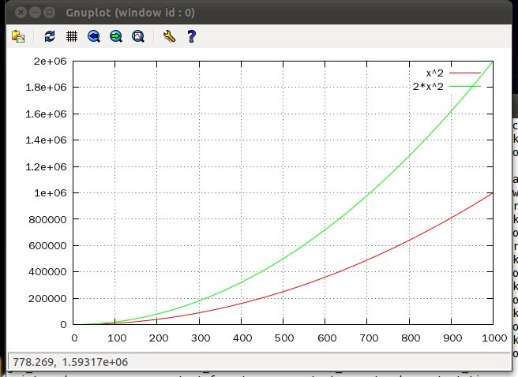

기본 규칙은 이와 같은데 오르카의 맵은 중복을 허용하지 않으나 xml은 중복을 허용하기 때문에 중복되는 태그가 존재하면 튜플리스트로 관리한다.
즉, 위의 예를 좀 바꾸어
str = ''' <?xml version="1.0"?> <tag_a> <tag_b attr1="value1" attr2="value2">text of tag b</tag_b> <tag_b>text of tag b 2nd</tag_b> </tag_a> ''';
이런 입력값에 대해서 오르카는
{ '$info':'xml version="1.0"',
'tag_a':{ 'tag_b':( { '$text':'text of tag b 2nd' },
{ '$attrs':{ 'attr1':'value1','attr2':'value2' },'$text':'text of tag b' } )
}
}
위와 같이 tag_b의 value로서 튜플로 각각의 노드들이 표현된다.
이제 이로부터 tag_a안에 무슨 노드들이 있는지 보고 싶으면
ret = xml.decoding(str);
ret['tag_a'].keys(); 와 같이 하면 되고
내려가려면 ret['tag_a']['tag_b'][1]['$text'] 와 같은 식으로 tree를 탐색하면 된다. xml내에서의 search등은 다음 버전에서 지원할 생각인데, alg.traverse 함수를 사용해서 사용자가 직접 탐색조건을 지정할 수도 있다.
이제 이렇게 디코딩된 자료를
xml.encoding(ret) 을 통해 인코딩하면
xml.encoding(ret) <? xml version="1.0" ?><tag_a><tag_b >text of tag b 2nd</tag_b><tag_b attr1=value1 attr2=value2 >text of tag b</tag_b></tag_a>
위와 같이 복원된다.
그런데 이 결과는 일렬이어서 보기 좋지 않다.
xml.beutify(ret)을 실행하면
<? xml version="1.0" ?>
<tag_a>
<tag_b >
text of tag b 2nd
</tag_b>
<tag_b attr1=value1 attr2=value2 >
text of tag b
</tag_b>
</tag_a>
와 같이 인덴트를 맞춰서 인코딩해준다.
json
xml 모듈과 마찬가지로 json 파일을 인코딩, 디코딩 하는 역할을 한다. 본 문서를 보기전에 module xml을 먼저 보는 것이 좋겠다.
json.decoding(str)
json.decoding은 json 스트링을 오르카의 자료구조로 디코딩 한다.json.encoding(obj)
json.encoding은 오르카 자료구조를 json 스트링으로 인코딩한다.json.beutify(obj)
json.beutify는 오르카 자료구조를 json 스트링으로 인코딩하되, readable하게 indent를 맞춰준다.변환규칙은, json의 dictionary 는 오르카의 맵으로, json의 배열은 오르카의 리스트로 변환된다. 단, xml과 마찬가지로 json의 딕셔너리는 다중키값이 가능한데 (중복된 키가 가능), 오르카의 맵은 중복을
허용하지 않기 때문에 중복이 발생했을 때는 중복되는 value들을 튜플로 만든다.
예를들어 설명해보면,
str = "{ 'a':3, 'b':6, 'c':[1,2,3, { 'a':{'b':'c'}, 'd':[1,2,3], 'd':3 }, 4,5,6] }";
이런 스트링이 존재할 때
ret = json.decoding(str);
이 함수는
{ 'a':3,'b':6,'c':[ 1,2,3,{ 'a':{ 'b':'c' },'d':( [ 1,2,3 ],3 ) },4,5,6 ] }
위와 같은 오르카 자료구조를 생성한다. 보면 (syntax가 유사하기 때문에) 거의 출력된 모습이 같다. 단,
'd'의 경우 같은 키값으로 [1,2,3]과 3 이 중복되기 때문에 튜플로 ([1,2,3], 3) 으로 변환되었다.
이제, 이 객체의 'c'의 목록을 보고싶으면 print: ret['c']; 와 같은 방식으로 접근가능하다.
이제 오르카 자료구조를 json 스트링으로 변환하는 것은, str = json.encoding(ret); 과 같이 하면 되고 이 함수는
{'a':3,'b':6,'c':[1,2,3,{'a':{'b':'c'},'d':[1,2,3],'d':3},4,5,6]}
와 같이 변환해 준다. 역시 일렬로 출력되기 때문에 보기 불편한데, xml과 마찬가지로 beutify 가 존재한다.
print: str = json.beutify(ret) 을 실행하면
{'a':3,
'b':6,
'c': [1,
2,
3,
{'a': {'b':'c'},
'd': [1,
2,
3],
'd':3},
4,
5,
6]}
위와 같이 depth를 맞춰 정렬시켜준다.
os
run(cmd)
run 인터페이스는 전달받은 것을 실행한다. popen이라 생각하면 된다.$ using os; $ os.run(‘ls’);
를 사용하면 폴더의 내용이 출력된다.
그런데, 간편함을 위해서 이를 실행하는 다른 방법도 제공한다.
$ ; ls -al
또 실행된 결과를 참조하기 위해 caller를 통한 역 참조를 사용하는데,
$ def __cout__; $ ; ls -al total 2924 drwxrwxrwx+ 10 MYHOME 없음 0 Dec 1 14:56 . drwxrwxrwx+ 24 MYHOME 없음 0 Nov 27 11:01 .. drwxrwxrwx+ 6 MYHOME 없음 0 Dec 1 02:11 .svn -rw-rw-rw- 1 MYHOME 없음 8 Nov 8 17:26 BUILD_NUMBER -rw-rw-rw- 1 MYHOME 없음 18007 Nov 8 17:26 COPYING …. $ print: my.__cout__; [ 'total 2924 ','drwxrwxrwx+ 10 MYHOME 없음 0 Dec 1 14:56 . ','drwxrwxrwx+ 24 MYHOME 없음 0 Nov 27 11:01 .. ','drwxrwxrwx+ 6 MYHOME 없음 0 Dec 1 02:11 .svn ','-rw-rw-rw- 1 MYHOME 없음 8 Nov 8 17:26 BUILD_NUMBER ','-rw-rw-rw- 1 MYHOME 없음 18007 Nov 8 17:26 COPYING …
와 같이 run객체는 호출자에 __cout__ 이 존재하면 출력 결과를 문자열로 추가한다. 단, __cout__은 nil이거나 string 타입이어야 한다. 안그러면 예외.
getenv(name)
환경변수를 조회할 때 사용된다.$ print: os.getenv(‘PATH’);
cwd()
현재의 working directory를 반환한다.$ print: os.cwd(); /root/curr
mkdir(path)
입력받은 경로의 디렉토리를 새로 생성한다.
$
$ os.mkdir('newdir');
$
$ os.cd('newdir');
$ print: os.ls('.');
[ ]
$
rename(src, dest)
입력받은 파일의 이름을 변경한다.
$ print: os.ls('.');
[ ]
$ os.mkdir('newdir');
$ print: os.ls('.');
[ './newdir' ]
$ os.rename('newdir', 'renamed_dir');
$ print: os.ls('.');
[ './renamed_dir' ]
$
copy(src, dest)
파일을 복사한다.
$ print: os.ls('.');
[ './file_a' ]
$ os.copy('file_a', 'file_b');
$ print: os.ls('.');
[ './file_b','./file_a' ]
$
remove(name)
파일을 삭제한다.
$ print: os.ls('.');
[ './file_a' ]
$ os.remove('file_a');
$ print: os.ls('.');
[ ]
$
ls()
디렉터리의 파일들을 리스팅한다. 결과값은 리스트 형태로 반환된다.
$ os.cd('/usr');
$ print: os.ls('.');
[ './tmp','./include','./kerberos','./local','./bin','./games','./sbin','./share','./lib','./src','./etc','./libexec' ]
$
cd(path)
디렉터리를 변경한다.
$ os.cd('/usr');
$ print: os.ls('.');
[ './tmp','./include','./kerberos','./local','./bin','./games','./sbin','./share','./lib','./src','./etc','./libexec' ]
$
isexists(path)
인자로 전달받은 경로의 파일이나 디렉터리가 존재하면 true를 리턴한다.
$ print: os.isexists('/etc');
True
$ print: os.isexists('/etc/passwd');
True
$ print: os.isexists('/if_not_exist');
False
$
isfile(path)
인자로 전달받은 경로가 파일이면 true를 리턴한다.
$ print: os.isfile('/etc/passwd');
True
$
$ print: os.isfile('/etc');
False
$
$ print: os.isfile('/if_not_exist');
False
$
isdir(path)
인자로 전달받은 경로가 디렉터리이면 true를 리턴한다.
$ print: os.isdir('/etc');
True
$ print: os.isdir('/etc/passwd');
False
$ print: os.isdir('/if_not_exist');
False
$
dir_iterator(path)
dir_iterator 는 입력받은 경로의 파일들을 순회할 수 있는 iterator 객체를 리턴한다. (튜토리얼의 iterator 객체부분을 참조하라) 사용자가 직접 next() 를 호출하여 파일을 순회할 수도 있고, for 문을 사용하여 처리할 수도 있다.
$ os.cd('/etc');
$ for a in os.dir_iterator('.'):
* print: a;
*
./printcap
./terminfo
./rc2.d
./bash_completion.d
...
dir_traverser(path)
dir_iterator가 현재 디렉토리의 파일들만을 순회하는데 반해, dir_traverser는 현재 디렉토리 밑의 전체 파일들을 순회한다.
$ for a in os.dir_traverser('/etc/yum'):
* print: a;
*
/etc/yum/pluginconf.d
/etc/yum/pluginconf.d/blacklist.conf
/etc/yum/pluginconf.d/whiteout.conf
/etc/yum/pluginconf.d/refresh-packagekit.conf
$
read(filepath, size, offset)
read(filepath, size, offset) 은 filepath 파일을 읽어서 내용을 리턴한다. size가 있다면 그 길이 만큼, offset이 있다면 해당 offset부터 읽는다.write(filepath, data, offset)
write(filepath, data, offset) 은 filepath에 있는 파일에 data를 기록한다. offset이 있다면 해당 offset부터 기록한다.file_size(filepath)
file_size(filepath) 는 filepath에 있는 파일의 크기를 리턴한다.last_write_time(filepath)
last_write_time(filepath) 는 filepath에 있는 파일의 최종 기록시간을 datetime 형식으로 리턴한다.
$ os.write('foo.txt', 'hello, file');
$ print: os.read('foo.txt');
hello, file
$ print: os.file_size('foo.txt');
11
$ print: os.last_write_time('foo.txt');
2010-11-14T15:16:51
system
system 모듈은 시스템 정보를 조회하기 위한 것으로 다음 인터페이스를 제공한다.
cpu_n()
시스템의 CPU 코어갯수를 리턴한다. 이 값을 참조하여 parallel for by 의 적절한 값을 주거나 다른 병렬화 정도를 결정할 수 있다.free()
시스템의 가용 메모리를 구한다.memory()
시스템의 물리 메모리 양을 구한다.os()
시스템의 OS정보를 문자열로 리턴한다.version()
오르카의 버전을 문자열로 리턴한다.$ system.cpu_n(); 4 $ system.free(); 1422434304 $ system.memory(); 2002993152 $ system.os(); Linux version 2.6.35-22-generic (buildd@rothera) (gcc version 4.4.5 (Ubuntu/Linaro 4.4.4-14ubuntu4) ) #33-Ubuntu SMP Sun Sep 19 20:34:50 UTC 2010 $ system.version(); 0.5
math
math 는 c의 math library 에 대한 wrapper로서 다음의 인터페이스들을 제공한다.
acos, asin, atan, atan2, ceil, cos, cosh, exp, fabs, floor, fmod, frexp, ldexp, log, log10, modf, pow, sin, sinh, sqrt, tan, tanh
함수들의 인터페이스 및 스펙은 libm 의 것과 거의 유사하다. 단, 언어의 특성상 c에서는 파라미터를 통한 output이 가능하나 오르카에서는 포인터가 없기 때문에 출력값이 2개 이상인 경우는 튜플로 리턴된다. 상세한 사용예및 테스트 백터는 tests/test_math.orca 파일을 확인해보기 바란다.
operator
함수형 처리 및 lisp 모듈에서의 사용을 위해 operator 모듈이 추가되었다.+, -, *, /, %, <, <=, >, >=, ==, !=, ||, && 의 사칙연산 및 비교연산함수들을 인터페이스로 가지고 있다. 이 멤버들은 특수기호를 포함하고 있기 때문에, 참조할 때 다음과 같이 ' ' 로 묶어서 사용한다.
$ operator.'+'(3, 4); 7 $ operator.'-'(3, 4); -1 $ operator.'*'(3, 4); 12 $ operator.'%'(3, 4); 3 $ operator.'<='(3, 4); true
이 함수들은 이항연산자들이다. 여러 인자에 대한 처리를 위해서는 fun.reduce, fun.apply 를 사용한다.
sort
sort는 a를 정렬하여 정렬된 결과를 새 컨테이너에 담아 리턴한다. 현재 처리할 수 있는 컨테이너는 리스트와 튜플이다.
fun
고차함수작업을 위한 유틸들이다. 다음과 같은 인터페이스를 제공한다.
map(iteratable, f)
iteratable의 각 멤버에 대해 f를 적용하고 그 결과를 리스트로 되돌린다.
$ using fun;
$ ret = fun.map([1,2,3], %c{ return argv[0] * 2; } );
$ print: ret;
[ 2,4,6 ]
위 코드는 [ 1 * 2, 2 * 2, 3 * 2] 과 같이 동작했다.
reduce(iteratable, fun, initial)
iteratable의 각 멤버들에 대해서 fun을 적용한 누적결과를 리턴한다. initial이 존재하면 그것을 초기값으로 하고, 없으면 첫번째 원소를 초기값으로 한다.
다음은 리스트의 전체값을 더하는 코드이다.
$ using fun;
$ print: fun.reduce([1,2,3,4,5], %c{ return argv[0] + argv[1]; });
15
argv[0]은 누적된 결과가 계속해서 들어가고, argv[1]에 멤버들의 각 원소가 들어간다. 따라서 위코드는 ((((1 + 2) + 3) + 4) + 5) 와 같이 동작했다.
bind_1st(fun, arg)
fun 함수의 첫번째 파라미터에 arg를 bind한 새로운 함수를 생성한다.
즉, def mul(a, b) { return a * b; }
란 함수가 있을 때
mul10 = fun.bind_1st(..mul, 10); 과 같이 하면
$ print: mul10(2); 20 $ print: mul10(2.4); 4.8
과 같이 입력되는 값에 10을 곱하는 (mul함수의 a에 10이 바인딩되어) 새로운 함수가 나타난다.
bind_2nd, bind_3rd 역시 두번째, 세번째 파라미터를 특정객체로 묶는 역할을 하며, fun.bind_nth(fun, arg, n) 는 arg를 fun함수의 n번째 파라미터에 바인딩 한다.
물론 bind 는 중첩해서 가능하다.
apply(f, list)
리스트, 튜플 타입인 list를 f 함수에 각각 파라미터에 대입시켜 실행한다.
즉 fun.apply(foo, [1,2,3]) 은 foo(1,2,3) 을 실행하게 된다.
gui
이번버전부터 오르카는 GUI 를 지원하게 되었다. 오르카의 유연한 객체관계 모델을 사용하여 GUI를 유연하게 표현하는 모습을 살펴보자.
단, 이 모듈은 하부단의 표현 레이어로 현재는 Gtk 만을 사용하고 있기 때문에, 현재 윈도우즈에서 이 기능을 사용하려면 windows용 gtk 라이브러리를 설치해야 한다. 이 부분이 번거롭긴 하지만 아래의 몇몇 예제를 보면 그럴만한 가치가 있다는 것을 알게 될 것이다.
def main : window
{
my.attr['wh'] = (800, 600);
def box : vbox
{
def menu : menubar
{
file = [ 'open', %c{
name = dialog.fileopen(upper('main'));
str= os.read(name);
upper('box').hs.edit.attr['text'] = str;
},
'save', %c{
str= upper('box').hs.edit.attr['text'];
name = dialog.filesave(upper('main'));
os.write(name, str);
},
'exit', %c{
upper('main').quit();
}
];
my.push_back('file', file);
}
def hs : scroll
{
def edit : text
{
}
}
}
}
위의 예제는 메모장을 오르카로 표현한 것이다. 만일 win api 나 gtk 프로그래밍을 해봤다면 코드만으로 이 작업을 하는 것이 얼마나 번거로운지 알 것이고, RAD 툴을 쓴다해도 그 툴의 표현방식과 실제 코드의 갭으로 인해 코드의 직관성이 떨어지게 된다.
반면, 오르카는 모든 데이터의 기본단위를 객체로 최소호하고 이들의 상관관계를 동적으로 설정할 수 있기 때문에 실제보여지는 GUI 객체가 코드상의 객체와 위치, 관계, 코드를 동일하게 유지할 수 있다.
오르카의 GUI에 대한 접근은 눈에 보이는, GUI객체 그 자체와 객체간의 포함관계를 코드상의 객체로 1:1 매핑하게 하는 것이 핵심이다.
즉, 하나의 버튼이 있는 윈도우를 생각해보자, 그 버튼은 윈도우 안에 속해있다.
def main : window
{
def box : vbox
{
def ok : button
{
my.attr['text'] = 'ok';
}
}
}
해서 그 코드는 위와 같이 표현된다. 윈도우를 상속받은 main window 안에 button 의 속성을 상속받은 ok button 이 존재한다. 단, GUI 객체를 어떤식으로 배치할지를 정하는 container 객체가 하나 있어야 하는데, vbox, hbox, fixed container 중의 하나안에 존재해야 한다.
위 코드를 아래와 같이 실행시키면 윈도우가 나타난다.
my.main.make(); my.main.show();

make 인터페이스는 윈도우 안의 GUI 객체들을 포함관계대로 구성하라는 의미이고, show 인터페이스는 구성된 윈도우를 보여준다.
보여준 윈도우는 아래와 같다.
아직 ok 버튼의 동작을 정의하지 않았기 때문에 클릭한다 해도 아무 일도 일어나지 않는다.
이제 실제 동작이 있는 테스트 예제를 보자
def main : window
{
my.attr['xy'] = (50, 20);
my.attr['wh'] = (300, 200);
def box : fixed
{
def counter : label
{
my.attr['xy'] = (40, 50);
my.attr['text'] = 0;
}
def plus : button
{
my.attr['xy'] = (150, 30);
my.attr['wh'] = (100, 50);
my.attr['text'] = '+';
my.event['clicked'] = %c{
upper('box').counter.attr['text'] += 1;
};
}
def minus : button
{
my.attr['xy'] = (150, 130);
my.attr['wh'] = (100, 50);
my.attr['text'] = '-';
my.event['clicked'] = %c{
upper('box').counter.attr['text'] -= 1;
};
}
}
}
위의 예제는, 윈도우 안에 카운터 텍스트가 있고 이 카운터를 증감시키는 +, - 버튼이 존재한다. fixed container 안에 있기 때문에 attibute로 xy, wh 를 절대좌표로 지정했다.
이제, gui 이벤트는 event 어트리뷰트를 통해 정의할 수 있다. plus button 의 'clicked' 를 코드와 같이 정의하면, 해당 버튼을 클릭했을 때 그 정의된 객체가 실행된다.
코드에선 upper('box').counter.attr['text'] += 1 이 동작한다. upper는 util.upper인터페이스로 자신의 owner들을 따라 올라가면서 이름이 같은 객체를 찾는 일을한다. 해서 upper('box').counter는 main.box.counter를 리턴하고, counter의 'text' 속성을 1 증가시킴으로써 실제 GUI 텍스트를 변경시키게 된다.
실제 나타나는 윈도우는 아래와 같다.

짧지만 간결한 이 예제에서 볼 수 있는 것은 실제 GUI 윈도우상에 있는 객체들과 그 객체들의 관계, 이벤트가 실행됐을 때의 코드등이 일관성 있고 직관적으로 표현된다는 점이다.
이를 GTK API나 win32 api 만으로 구현하거나, MFC로 구현했을 때와 비교해 보면 차이점을 더 명확히 알 수 있다.
GUI 객체들은 현재 아래 목록들이 제공된다.
- window : 최상위 윈도우 객체
- button : 버튼
- check : 체크버튼
- combo : 콤보버튼
- radio : 라디오버튼
- entry : 입력 엔트리
- fixed : 절대좌표 컨테이너
- vbox : 세로 컨테이너
- hbox : 가로 컨테이너
- dialog : 기본제공 다이얼로그 (파일 오픈, 저장 등)
- hsep : 가로 분리자
- image : 이미지
- label : 라벨
- list : 리스트
- menubar : 메뉴
- scroll : 스크롤
- statusbar : 상태바
- table : 테이블
- text : 텍스트
- tree : 트리
각각의 객체들은 GTK 객체 속성을 나타내며 이를 상속하여 앞의 예제와 같이 윈도우를 구성할 수있다. 각각의 예제에 대해서는 tests/test_gui.orca 를 실행하면, 셈플 프로그램과 그것의 코드를 볼 수 있다.
datatime, date, time
시각과 시간을 관리하는 모듈들이다. datetime은 년월일시분초(및 마이크로세컨드까지) 단위로 특정 "시각"을 가르키는데 사용되며 내부적으로는 date + time으로 구성되어 있다.
date는 년월일까지의 특정 일자를 가르킨다. time이 좀 특별한데 엄밀히 하루의 특정 시각이아니라 시간이다. 즉, 자정으로부터 해당 시간까지의 간격을 값으로 가진다.
dateduration은 날짜범위의 이러한 간격이다. (두달뒤, 3주 전 과 같은 연산에 사용 할 수 있는)
시각이란 특정한 포인트이기 때문에 시각끼리 더할 수 없다. 단 시각 끼리 빼면 시각사이의 간격이 리턴되는데 date라면 최저 해상도인 날 수가, time끼리 빼면 최저 해상도인 microseconds가 정수 타입으로 리턴된다.
시간이란 간격이기 때문에 시간끼리 더하거나 뺄 수 있다. 그리고 간격이기 때문에 정수로 곱하거나 나눌 수 있다.
시각과 시간을 더하면 특정 시각으로부터의 시간만큼 진행된 시각이 리턴된다. 시각에서 시간을 빼면 해당 시각보다 전의 시간만큼 앞선 시각이 리턴된다.
이 관계를 유의해서 다음 모듈들을 각각 살펴보자
time
자정으로 부터 경과된 시간을 의미한다. 내부적으로 hour, minute, second, microsecond를 필드로 가진다.
time.clone(format): 생성자로서 보기와 같은 포멧의 시간정보를 받아 시간 객체를 새로 생성한다.
$ print: a = time.clone('01:02:03.4');
01:02:03.400000
$ print: a.hour;
1
$ print: a.minute;
2
$ print: a.second;
3
time.time_of_day() : 현재시간값을 리턴한다.
$ print: time.time_of_day(); 23:01:33.990408
time.hours(h)
h 시간만큼의 duration을 리턴한다.time.minutes(m)
m 분만큼의 duration을 리턴한다.time.seconds(s)
s 초만큼의 duration을 리턴한다.time.microseconds(us)
us 초만큼의 duration을 리턴한다.위의 각 함수들은 각각의 time 객체를 리턴한다. 예제는 아래와 같다.
$ print: time.clone('01:02:03') + time.hours(3) + time.microseconds(1000);
04:02:03.001000
duration 이기 때문에 각 항목들은 제한이 없다. 예를들어 minutes는 60을 넘을 수 있다.
그리고 time 은 정수와 덧셈이 가능하다. 더해지는 정수값은 microseconds를 의미한다.
$ print: a; 01:02:03 $ print: a + 1234; 01:02:03.001234 $
time간에는 비교연산이 가능하다. 비교의 의미는 같은 크기를 가졌는가 이다.
$ using time;
$ a = time.clone('01:02:03');
$ b = time.clone('01:02:04');
$ print: a > b;
false
$ print: a == b;
false
$ print: a < b;
true
date
date는 일단위의 특정시각을 의미한다. 각각 year, month, day 의 필드로 구성되어 있다.
$ using date;
$ print: a = date.clone('2000-01-02');
2000-01-02
$ print: a.year, ' ', a.month, ' ', a.day;
2000 1 2
date.today 는 현재 날짜를 의미한다.
$ print: date.today(); 2010-11-02
date는 시각인데 반해 년,월,일,주 단위의 간격을 의미하는 dateduration이라는 객체가 있다. 이 일자의 시간객체는 상호간에 더하고 곱하고 나눌수 있다. 단, 나누기는 각 필드에 대해 나누게 되며 나머지는 사라진다. 정수를 더할 수도 있는데 이는 최저 해상도인 일수를 의미한다.
$ using date; $ print: date.years(1); 1 years $ print: date.months(2); 2 months $ print: date.days(3); 3 days $ print: date.weeks(4); 4 weeks $ print: a = date.years(3) - date.months(4) + date.weeks(2) - date.days(7); 3 years -4 months 2 weeks -7 days $ print: a *= 2; 6 years -8 months 4 weeks -14 days $ print: a /= 3; 2 years -2 months 1 weeks -4 days $ print: a += 1; 2 years -2 months 1 weeks -3 days $ print: a -= 2; 2 years -2 months 1 weeks -5 days
이제 date와 dateduration을 더하고 빼서 새로운 일자를 구할 수 있다.
$ print: date.clone('2000-01-01') + date.months(2);
2000-03-01
date 끼리의 뺄셈은 두 일자 사이의 날 수를 의미한다. date에 정수를 더하고 뺄수도 있는데 이는 date.days 단위를 의미한다.
$ using date;
$ print: date.clone('2000-01-01');
2000-01-01
$ print: date.today() - date.clone('2000-01-01');
3958
$ print: date.clone('2000-01-01') + 100;
2000-04-10
datetime
date 와 time이 더해지면 datetime 객체가 된다. 이것은 특정 date로부터 time 시간만큼 지난 특정 시각을 의미한다.
$ print: date.today() + time.time_of_day(); 2010-11-02T23:26:12.827502
datetime은 다음과 같이 생성할 수도 있으며 now() 는 현재의 년월일시를 의미한다. datetime은 내부적으로 date() 와 time() 인터페이스를 가지고 있다.
$ print: datetime.clone('2000-01-02 03:04:05');
2000-01-02T03:04:05
$ print: a = datetime.now();
2010-11-02T23:21:56.685685
$ print: a.date(), ' ', a.time();
2010-11-02 23:21:56.685685
datetime은 시간인 dateduration 이나 time을 더하거나 뺄 수 있다.
$ print: a = datetime.clone('2000-01-01 03:04:05');
2000-01-01T03:04:05
$ print: a + date.years(10) - date.months(30) + time.hours(100) - time.minutes(2000);
2007-07-03T21:44:05
datetime끼리의 뺄셈은 그 시각 사이의 간격인 time객체가 리턴된다. 마이크로 세컨드를 정수값으로 리턴한다. datetime에 정수를 더하거나 빼면 최저해상도인 마이크로 세컨드 만큼의 덧, 뺄셈을 의미한다.
$ print: a = datetime.clone('2000-01-01 03:04:05');
2000-01-01T03:04:05
$ print: a + 1000000 * 3600 * 24 * 10;
2000-01-11T03:04:05
$ print: a - 10;
2000-01-01T03:04:04.999990
$ print: datetime.clone('2010-01-01 03:04:05') - a;
87672:00:00
time.msleep(msec) 이것은 좀 별다른 static 함수로서 milliseconds만큼 sleep한다.
gnuplot
gnuplot을 손쉽게 사용하기 위한 shell 수준의 wrapper이다. wrapper로 구성되어 있으나, 오르카의 조건제시법을 이용하여 생성한 좌표를 그래프로 표기할 수 있다. 때문에, gnuplot의 단순한 그래프식을 사용하지 않고 오르카의 여러 라이브러리들을 사용한 좀 더 유연한 표현식을 그래프화 시킬 수 있다.
gnuplot.run(cmd)
가장 먼저, 이 인터페이스를 사용하면, cat cmd | gnuplot 과 같은 동작을 수행할 수 있다. 가장 간단한 wrapper 인터페이스이다.gnuplot.add(title, list)
이 명령어를 수행하면 gnuplot객체의 내부 2차원 그래프 데이터에 list가 추가된다. list 는 [(x1, y1), (x2, y2)...] 와 같은 x, y plot 의 리스트이다.gnuplot.plot(cmd);
이 인터페이스는 추가된 2차원 데이터들을 화면에 출력한다. 추가적으로 cmd를 실행한 후, 그래프를 출력하는데, cmd에는 주로 'pause 1'정도를 사용하면 적절하겠다.gnuplot.clear();
이 인터페이스는 gnuplot 객체에 저장되어 있는 그래프 데이터를 초기화한다.아래의 예는 한 그래프에 x^2, 2*x^2 그래프를 그리는 예이다. 플롯들은 선으로 연결되고, grid 속성이 추가 되었으며, 그래프는 1초간 나타난다.
a = gnuplot.clone();
a.clear();
a.add('x^2', %[(x, x*x)|x<-1~1000]);
a.add('2*x^2', %[(x, x*x*2)|x<-1~1000]);
a.set('line');
a.plot('pause 1');
출력된 그래프 이미지는 아래와 같다.

3차원 그래프는 좌표가 3개 필요하기 때문에, 내부 데이터와 인터페이스가 조금 다르다.
gnuplot.sadd(title, list, group)
이 인터페이스는 gnuplot 객체에 3차원 데이터를 추가한다. group 파라미터가 따로 있는데, (x, y, z) 의 리스트가 x, y 순으로 소팅되어 있다면, 결과물에 그물모양의 라인이 추가되어 입체감을 줄 수 있게 된다. 실행결과는 아래의 그래프를 참조하면 된다.gnuplot.splot(cmd)
이 인터페이스는 plot과 유사하나 3차원 데이터들을 그린다. s는 space 를 의미하는 prefix 이다.
sbf= %[(x, y, 40*(x*x + y*y)*math.exp(-(x*x) - (y*y)))|x<--2~2:0.1, y<- -2~2:0.1];
sbf2= %[(x, y, 4*y-1)|x<- -2~2:0.1, y<- 0~1:0.1];
gnuplot.sadd('40*(x^2 + y^2) * exp(-x^2 -y^2)', sbf, true);
gnuplot.sadd('4*y-1', sbf2, true);
gnuplot.set('grid');
gnuplot.set('line');
gnuplot.splot('pause 1');
위 예제는 z = 40*(x^2 + y^2)*exp(-x^2-y^2) 그래프와 z = 4*y-1 그래프를 그린다. 그려진 결과는 아래와 같다.

여기서는 한줄짜리 조건제시법 리스트를 플로팅 했는데, 좀 더 응용하여 오르카를 사용하여 2, 3차원 플롯 리스트를 작성하면 여러 분야에 더 유용하게 사용될 수 있을 것이다.
remotec, remoted, dist
이 모듈들은 오르카의 원격호출, 분산처리를 지원하기 위한 모듈이다. 먼저 remoted 는 원격호출을 받아 실행해주는 서버를 띄운다.
remoted(port)
해당 포트로부터 처리 요청이 오길 기다린다.orca remoted 8080 ## dist server start
실행을 위해선 위와 같이 shell에서 직접 실행하거나 스크립트 내에서 remoted(8080)을 호출하면 된다.
다음, 다른 머신에서 remotec 모듈을 이용해 해당 노드로의 연결을 설정한다.
$ using remotec;
$ c = remotec.clone('127.0.0.1', 8080);
$ print: c.ping();
true
$
이러면 객체 c의 밑에서 일어나는 멤버작업들은 원격 노드에서 일어나게 된다. (.attr, .attr_last, .attr= 을 통해 구현되어 있다) 이제 원격 노드에 대해서 객체를 write, read 하는 예를 선보이겠다.
$ c.hello = 'hello, remote'; $ print: c.hello; hello, remote
아주 간단한데, 이건 로컬의 객체 c 내부에서 작업한 게 아니라 c.hello = 'hello, remote' 하는 순간 원격 node의 root.hello 란 객체에 저 스트링을 set했고, print: c.hello 로 remotec객체 c의 hello 멤버를 참조하면 접속되어 있는 노드의 root.hello 값을 가져오게 된다.
다단계 설정도 가능하다.
$ c.foo.bar = 10; $ print: c.foo.bar; 10 $
이렇게 하면 원격 노드의 root.foo.bar 객체에 10이 설정되고 (foo 객체는 없으면 생성된다) print: c.foo.bar로 참조하면 해당 객체의 멤버가 돌아온다.
이 때, c.foo.bar 를 하면 c객체의 foo 멤버 객체가 모두 소켓을 타고 오는게 아니라, 실제로 필요한 foo.bar만 소켓을 타고 온다. (operator_get과 operator_get_last를 통해 각각 구분해서 처리할 수 있게 된다) 따라서, 원격 노드의 객체path를 걱정없이 참조할 수 있다.
이제 원격 노드의 함수를 실행해보자. 실행해볼 함수도 따져보면 객체이고 해서 다음과 같이 원격노드에 실행할 함수를 set한 후 실행할 수 있다. (잠깐, 현재 쉘 인터프리터 모드에서는 객체 전달이 되지 않는다. 다음 테스트는 파일을 통해서 진행한다)
remoted 가 8080포트로 떠있는 상태에서 다음 코드를 실행시키면,
using remotec;
def sum(...)
{
return argv[0] + argv[1];
}
c = remotec.clone('127.0.0.1', 8080);
c.sum = my.sum;
print: c.sum(10, 20);
결과값으로 30이 리턴된다. 원격 노드의 root.sum에 클라이언트에서 정의한 객체를 전달하고 그것을 실행시킨 결과값을 받아왔다.
그런데 잠깐, 원격 호출을 한다는건 저쪽 머신에만 있는 리소스를 사용해서 처리하기 위해서도 있지만 처리해야 할 일을 분담하는 의미도 있다. 그런데 위의 예에서는 원격 머신이 처리를 끝낼 때까지 클라이언트에서 블록된다. 논블록킹으로 처리가 진행되게 하려면 아래와 같이 코드를 수정하면 된다.
using remotec;
def sum(...)
{
return argv[0] + argv[1];
}
c = remotec.clone('127.0.0.1', 8080);
c.sum = my.sum;
c.sum.__nowait__(10, 20);
print: c.is_done(100);
print: c.pop_obj();
c.sum을 호출할 때 가상의 멤버 __nowait__ 을 한번 더 달아주면 논블록킹으로 바로 리턴되며 (리턴값은 nil) is_done(msec) 멤버를 호출하여 처리가 끝났는지 확인할 수 있다.
isdone(msec) 은 처리가 끝났는지를 true/false로 리턴하되 인자가 없으면 바로 리턴하고, 인자가 있으면 처리 결과를 최대 밀리초만큼 기다린다. (기다리는 중에 처리가 끝나면 바로 리턴된다) 처리가 되었으면 c.pop_obj() 를 통해 저장된 결과값을 읽어올 수 있다.
위의 예가 다른 언어의 원격호출과 차별된 것은 두가지 인데, 하나는 마치 로컬의 객체를들을 다루듯 c.* 로 원격의 객체들을 다루었다는 점이며, 다른 하나는 실행할 객체를 이쪽에서 정의해서 저쪽으로 넘겨 바로 실행했다는 점이다. 오르카는 객체의 컴파일된 바이트 코드까지 바로 머신간 바로 전달 가능하다.
해서, remotec 객체의 remote_do() 함수를 이용하면 위의 코드를 다음과 같이도 실행할 수 있다.
using remotec;
c = remotec.clone('127.0.0.1', 8080);
c.remote_do: 10, 20, %c{
return argv[0] + argv[1];
};
print: c.is_done(100);
print: c.pop_obj();
이 코드는 30을 리턴한다.
remoted(...) 는 가변인자들을 인자로 하여 마지막 가변인자 함수를 원격 노드에서 논블락킹으로 실행한다. 마찬가지로 is_done으로 처리완료 여부를 확인한 후 pop_obj로 결과값을 확인했다.
remoted_do 의 마지막 인자는 원격 노드에서 실행할 함수인데 예에서는 람다함수를 사용해여 처리했다. 원격호출이지만 마치 로컬에서 처리하듯 자연스럽게 진행된다.
현시점에서 이정도까지 구문 상으로 유연하게 원격호출을 실행할 수 있는 언어는 오르카 뿐이라 생각된다.
dist 모듈은 remoted 리스트를 가지고서 이들에 대해 손쉽게 분산처리를 진행하기 위한 모듈이다. 현재는 간단한 스케쥴링 방식을 쓰고 있지만 이부분은 좀 더 개선할 생각이고...
dist.add(ip, port)
dist.add(ip, port) 는 특정 원격 노드로 접속한 후, 해당 원격 노드를 내부 노드 리스트에 저장하여 처리 요청이 왔을 때 하나를 선택할 수 있도록 한다.
dist.dist_do(...)
dist.dist_do(...) 는 가변인자들을 인자로 가변인자의 마지막 함수를 어느 한 노드로 (모듈이 알아서 선택한) 처리를 요청한다. remotec.remote_do 와 같으나 노드를 알아서 선택하는 것이 다르다.dist.dist_for(list, fun)
dist.dist_for(list, fun) list 들을 나누어 등록되어 있는 원격노드들에 분산시켜 fun을 실행한 결과를 결과 리스트로 되돌려 받는다. dist_do와 다르게 dist_for는 모든 결과가 처리될 때까지 블락된다. 현재는...예를 들어 돌아가는 것을 보자.
다음은 프로젝트에 포함되어있는 test_dist.orca이다. 테스트 프로그램은 원격노드를 port, port+1, port+2 로 세개 띄우고 dist를 통해 dist_do, dist_for 를 실행시킨다. dist_do로는 간단한 sum함수를 실행시키고 dist_for로는 1~100 까지의 리스트를 분산처리로 각각 제곱한 결과를 가져오도록 하고 있다.
using remoted;
using remotec;
using dist;
using random;
using time;
random.seed();
port = random.integer(1000) + 8000;
print: '# port: ', port;
parallel do {
server = remoted.clone();
server(port);
}
parallel do {
server = remoted.clone();
server(port+1);
}
parallel do {
server = remoted.clone();
server(port+2);
}
time.msleep(200);
dist.add('127.0.0.1', port);
dist.add('127.0.0.1', port+1);
dist.add('127.0.0.1', port+2);
r = dist.dist_do(10, 20, %c{ return argv[0] + argv[1]; });
print: r.is_done(100);
print: ret = r.pop_obj();
if ret != 30:
throw test.dist, 'dist_do failed';
list = [1..100];
rs = dist.dist_for(list, %c{ return argv[0] * argv[0]; } );
print: rs;
if rs != %[ x*x | x<-1~100 ]:
throw test.dist, 'dist_for failed';
print: '## now quit: ', dist.shutdown();
return 'OK', my;
다음은 위의 테스트 프로그램의 실행결과이다. 중간 dist_do 의 결과로 30 이 나왔고, [1..100] 을 제곱한 결과가 제대로 분산처리된 것을 확인할 수 있다.
# port: 8985 ## dist server start ## dist server start ## dist server start true 30 [ 1,4,9,16,25,36,49,64,81,100,121,144,169,196,225,256,289,324,361,400,441,484,52 9,576,625,676,729,784,841,900,961,1024,1089,1156,1225,1296,1369,1444,1521,1600,1 681,1764,1849,1936,2025,2116,2209,2304,2401,2500,2601,2704,2809,2916,3025,3136,3 249,3364,3481,3600,3721,3844,3969,4096,4225,4356,4489,4624,4761,4900,5041,5184,5 329,5476,5625,5776,5929,6084,6241,6400,6561,6724,6889,7056,7225,7396,7569,7744,7 921,8100,8281,8464,8649,8836,9025,9216,9409,9604,9801,10000 ]
하둡과 같은 다른 분산처리 시스템에 비해 매우 쉽게 구축하고 유연하게 처리할 수 있는 것을 확인할 수 있다.
fs, dfsd, cached
이 모듈들은 동적인 분산파일시스템, 분산캐쉬를 구현한 모듈들이다. 아직은 프로토타입 수준이지만 앞의 dist 모듈과 합쳐서 분산처리에 유용하게 쓸 수 있다.
dfsd는 분산파일 서버노드이고, cached는 key, value 기반의 분산캐쉬 노드이다. fs는 이 노드들을 현재 파일시스템 경로의 특정 경로에 mount시키는 역할을 한다.
단, 마운트 한다는 것은 오르카 언어 내에서 fs에서 제공하는 파일억세스를 할 경우 적용된다는 의미로 오르카 밖에서 마운트 되는 것은 아니다.
분산 파일서버 노드인 dfsd는 dfsd(path, port) 로서 현시스템의 특정 path를 마운트 할 수 있게 port번호로 대기한다.
[머신 192.168.0.2] $ orca dfsd /home/lynix 8080 [머신 192.168.0.3] $ orca dfsd /home/orca 8080
이렇게 대기하고 있는 노드에 대해 fs.mount(path, ip, port) 를 사용하여 마운트 시키는데,
fs.mount('/mnt/node_a', '192.168.0.2', 8080);
fs.mount('/mnt/node_b', '192.168.0.3', 8080);
와 같이 실행하면
data = fs.read('/mnt/node_a/foo/bar.txt');
위의 문장을 실행하면 192.168.0.2 머신의 /home/lynix/foo/bar.txt를 읽어 data에 저장한다.
data = fs.copy('/mnt/node_a/foo/bar.txt', '/mnt/node_b/')
위 문장을 실행하면 0.2머신의 /home/lynix/foo/bar.txt 를 0.3 머신의 /home/orca 로 복사한다.
반면, fs.read('/etc/passwd') 와 같이 실행하면 해당 path는 마운트시키지 않는 경로이므로 로컬서버의 해당 파일을 읽는다.
read와 같은 fs의 파일관련 멤버들은 다음과 같다.
mkdir, ls, remove, file_size, isexist, isfile, isdir, read, write, copy, rename 이 함수들은 os모듈에서 제공하는것과 거의 유사한 동작을 한다. 차이점은 전술했다 시키 분산파일서버가 마운트 되어 있다면 해당 서버의 파일을 대상으로 동작한다는 것이다.
따라서 확장성을 위해 (분산파일시스템과 분산 캐쉬를 사용할 수있게) 파일전체를 다루는 작업은 os 모듈을 사용하지 말고 fs모듈을 사용하여 프로그래밍 하는 것이 좋다. (설령 다른 서버를 당장 마운트 할 일이 없다 해도)
아, 추가로 os와 fs모듈의 파일 작업은 file핸들을 가지기 않고 stateless로 매번 file open, close작업을 수행하기 때문에 잦은 파일 작업은 효율적이지 않다. 이경우에는 전통적인 방식 그대로 io.open('filename', 'rw') 와 같이 열어서 파일핸들 객체를 사용해 작업하는 것이 좋다.
fs.mount_dist_dir(path, ...)
fs.mount_dist_dir(path, list) : mount가 특정 path에 한 서버를 마운트 시킨다면, 본 인터페이스는 list에 있는 서버들을 path에 분산 마운팅 시킨다. 그리고 fs.read(path) 의 억세스가 오면 path를 해슁해서 각각의 서버들에 분산시켜 분배한다.fs.mount_dist_dir('/mnt/dir', ('192.168.0.1', 8080), ('192,168.0.2', 8081));
fs.mount_dist_dir('/mnt/dir', ('192.168.0.1', 8080), ('192,168.0.2', 8081)); 와 같이 사용하고
fs.write('/mnt/dir/file1', 'hello, file');
fs.write('/mnt/dir/file2', 'hello, file');
fs.write('/mnt/dir/file3', 'hello, file');
...
와 같이 호출하면 path의 값을 적절히 해슁해 특정 서버로 중계한다. 해당 해슁은 string.hash() 인터페이스를 사용한다.
나중에 fs.read('/mnt/dir/file1'); 을 호출하면 아까 file1이 써졌던 서버로 가서 해당 파일의 내용을 읽어온다.
cached 는 key, value 페어의 메모리 캐쉬서버이다. 캐쉬 서버라고 인터페이스를 다르게 하지 않고, 단지 dfsd와 똑같이 동작하되 파일 value를 메모리에 기록한다는 것만 다르다.
dfsd와 인터페이스가 동일하기 때문에 fs에서 moutn_dist_dir을 통해 여러 cached를 마운트 하면 분산 캐쉬 서버로 동작시킬 수 있다. (일관성 -_-)=b)
단, 이번 릴리즈에서는 단순히 저장하고 읽는 기능만 있다. 설정한 용량을 초과하면 오래된 목록을 제거하는 기능은 다음 릴리즈에서 제공할 예정이고, 이 기능을 이용하여 cached와 dfsd를 각각 마운트해서 cached 에 없으면 dfsd에서 읽어오고 cached에 추가하는 또다른 분산 서버 노드도 추가할 계획이다.
lisp
lisp 모듈은, 오르카의 parse statement로 common lisp 을 간략히 구현한 것이다. orca를 사용하여 구현하였기 때문에 lisp 구문내에서 오르카 객체와 모듈을 자연스럽게 참조할 수 있다.
lisp.compile(str)을 실행하면 컴파일된 코드가 리스트 형태로 리턴된다. 이 리턴값을 차후에 사용하고자 하면, pack.save()를 사용하여 파일에 저장할 수 있다. 실제 실행결과는 이 리스트를 lisp.execute(list) 로 호출하여 얻을 수 있다.
실행예를 보아가며 설명하겠다.
가장먼저 3 + (4 * 2) 의 리습 코드를 실행한 모습이다. 컴파일된 결과와 그 결과를 실행한 값을 볼 수 있다. 인터프리터 상이라, 컴파일 결과물도 출력된 모습을 볼 수 있다.
$ ret = lisp.compile('(+ 3 (* 4 2))');
( [ [ +,3,[ *,4,2 ] ] ],{ 'F':false,'T':true,'car':car <0x9d82350>,'cdr':cdr <0x9d823d8>,'do':do_list <0x9d82460>,'list':list <0x9d824e8> } )
$ lisp.execute(ret);
11
아래와 같이 defun, macro, let 및 if, cond 구문들도 지원한다.
$ lisp.execute(lisp.compile('(defun (sum x y) (+ x y) )(sum 4 4)'));
8
$ lisp.execute(lisp.compile('(defmacro (addy x) `(+ ,x y)) (let ((y 20)) (addy 10))'));
30
$ lisp.execute(lisp.compile('( cond ((>= -3 20) (* 3 10)) ((< 20 10) 3) (T "error") )'));
error
또한, lisp 구문안에선 orca 객체들을 참조할 수 있다. 단, io, io.print만이 namespace에 잡혀있기 때문에, 다른 객체를 참조하기 전엔 (using path) 구문으로 등록해주어야 한다.
$ lisp.execute(lisp.compile('(print "hello\n")'));
hello
nil
lisp.execute(lisp.compile('(using math) (math.sin (/ 30.0 90.0))'));
0.327195
그리고, lisp 모듈 자체가 user defined statement 를 지원한다.
때문에 오르카 소스코드 상에서 다음과 같이 쓸 수 있다. def foo := %lisp{ (+ argv0 argv1) }; print: r = .foo(3, 4);
위 예제는 7을 출력한다. lisp UDS 객체에 파라미터는 argvN 의 형태로 전달된다. 이 모듈을 통해서, 오르카 언어상에서 유연하게 리습 구문을 사용할 수 있고, 리습에서 유연하게 오르카 객체를 참조할 수 있게되었다.
tests/test_lisp.orca에서 더 많은 테스트 예제들을 확인할 수 있고, lib/lisp.orca에서 리습모듈의 구현체를 볼 수 있다.
cpp
cpp 모듈은 user define statement 을 지원하는 모듈로서, 사용자가 cpp 로 된 객체를 손쉽게 작성할 수 있게 해준다. 오르카에서는 다른 언어들과 마찬가지로 cpp 로 만든 확장 라이브러리를 작성할 수있으나, 이런 류의 확자 라이브러리들은 편의성에 있어서 어느정도 한계를 지닌다. 실제 원하는 코드가 일부분이라 해도 언어별로 요구되는 스펙에 맞춰 구현체를 작성해야 한다.
using cpp;
def sum := %cpp{
// this is cpp code
return argv[0] + argv[1];
};
print: my.sum(10, 20);
위와 같은 코드를 작성하고, 해당 모듈을 실행하면 최초 실행시나 코드가 변경되서 재컴파일 할 필요가 있으면 아래와 같이 컴파일 내역이 나타나고
$ ./orca tt
cpp external module compile: g++ -shared -o /tmp/lib__tt_1_context.so /tmp/__tt_1_context.cpp -I${ORCA_HOME}/include/orca -L${ORCA_HOME}/lib -lorca
/usr/bin/ld: cannot find -lorca
30
30 이 출력된다. 위의 컴파일 메세지를 보면 tt.orca 파일로부터 해당 cpp 객체의 내용을 사용하여 /tmp/__tt_1_context.cpp 파일을 오르카가 생성하고 이를 컴파일하여 lib__tt_1_context.so 파일을 만든다는 것을 알 수 있다.
만들어진 모듈 파일은 리눅스의 경우 /tmp 에 저장된다. 모듈을 만들때 사용하는 오르카 라이브러리는 ORCA_HOME/lib 에서 찾는다. 때문에 환경변수에서 이를 잘 설정해 주어야 하고, 컴파일된 동적 라이브러를 참조하기 위해 /tmp 가 LD_LIBRARY_PATH에 추가되어야 한다.
cpp 모듈을 사용하기 위한 최초 설정이 좀 번거롭긴 하지만 한번 설정해 놓으면 바이너리 코드로 동작하는 확장 라이브러리를 손쉽게 작성할 수 있다.
cpp UDS객체에 오르카가 전달하는 파라미터는 vector 아래는 __tt_1_context.cpp의 내용으로 오르카 확장 라이브러리가 요구하는 내역을 모듈이 자동으로 생성했음을 알 수있다.
코드 중간에 사용자가 %cpp{ } 안에 작성한 부분이 들어있다.
단, cpp 코드를 사용할 때, 별도의 헤더나 라이브러리를 인클루드 해야 할 필요가 있다.
이경우엔
위와 같이 #include, #cflags, #ldflags 를 지정하면 된다. #include에 지정된 것들은 생성되는 코드의 윗부분에 등록되고, cflags, ldflags 에 지정된 것들은 컴파일시, 명령행 옵션으로 추가된다.
윈도우 환경에서는 이 컴파일을 vscompile.bat가 수행한다.
기본적으로 visual c++ express edition 2008 이 설치되었다 가정하고 vscompile.bat가 작성되었다. 만약 다른 컴파일러를 사용하거나 환경에 문제가 있다면 이 배치파일을 수정하면 된다.
sh 모듈은, os.run을 사용한 쉘 스크립트 wrapper인데 오르카의 user define statement 에 사용될 수 있도록 한 것이다.
기본적으로 os.run으로 구문을 실행하되, 파라미터는 argv[ ] 로 전달한다.
아래 예제는 tgzip이란 멤버를 sh 모듈을 사용한 사용자 정의 구문 객체로 선언하고,
이를 이용해 폴더를 tgz 로 만드는 예제이다.
간단하게 만들어본 http 서버이다.
./orca httpd . 80
아직 프로토타입 단계이지만, 이 모듈에서 파일을 다루는 방식은 fs 모듈을 사용하기 때문에 분산파일 시스템, 분산 캐쉬 시스템을 사용하여 호스팅 할 수 있는 장점이 있다.
현재 get, post, multipart 요청을 지원한다.
추가로, 요청되는 URI 가 .orca파일이면 자체적으로 쓰레드로 실행시켜 처리한다.
(프로세스가 아니라)
그리고, *.osp 파일을 요청하면 오르카의 osp 모듈이 해당 페이지를 파싱한 후 쓰레드로 실행시킨다. (OSP = orca server page)
현재, 간단한 테스트 페이지로서 http://orca-lang.or.kr:8080/hello.osp 를 제공한다.
base64 인코딩, 디코딩을 위한 모듈이다.
str에 대해서 base64 인코딩을 수행한다.
str에 대해서 base64 디코딩을 수행한다.
간단한 시간측정을 위한 유틸이다.
single thread라면 그냥 모듈자체를 사용해도 되고, MT환경이거나 측정대상이 여러개라면 clone 해서
각각 측정할 수도 있다.
지난 시간을 화면에 출력한다. day, hour, sec, ms, usec 순으로 디코딩해서 출력하며,
만일 특별한 메세지를 출력하고자 하면, 인자로 스트링을 전달하면 지연시간을 출력하기 전에 먼저 출력한다.
scope statement 를 지원한다.
scope_start 는 start와, scope_end는 lap과 같다.
오르카 언어의 저수준 동작을 제어하기 위한 모듈이다. 현재는 모듈을 런타임에 선택적으로 로드할 수 있는 (using을 써서 정적으로 로드하는게 아니라) load, unload 인터페이스를 제공한다.
사용 예는 다음과 같다.
간단한 유틸들을 모아놓은 모듈이다.
obj의 lang.id() 값으로 lock을 건다. scope object mutext를 반환하여 scope 를 벗어나면 lock release가 자동으로 되게 한다.
사용예는 다음과 같다.
k, v pair 를 lru 리스트에 추가한다.
v가, lru 로 관리되기 위한 실제 객체이며, k는 이를 구분하기 위한 키이다.
lru 리스트로부터 가장 오래된 항목을 제거한다.
k 를 lru의 가장 앞단으로 옮긴다.
lru 항목중 한 원소를 참조했을 때 호출해준다.
이 인터페이는 v를 리턴하는데, 만일 k, v 페어가 존재하지 않는다면 nil을 리턴한다.
현재 lru 리스트의 길이를 반환한다.
프롬프르상에서는 오르카 모듈을 직접 실행할 수는 있어도 모듈의 멤버를 바로 실행할 수는 없다.
즉, 프롬프트 상에서
$ orca foo 는 foo 모듈을 실행하는 것인데,
$ orca foo.bar 와 같이 foo안의 특정 멤버를 바로 실행할 수는 없다.
run 모듈을 사용하면, argv[0] 로 객체의 path를 받고 argv[1:] 을 인수로 객체를 실행해준다.
즉 아래와 같이 사용할 수 있다. 마지막의 nil 은 리턴값이다.
간단한 유틸리티성 모듈이다.
cgi 모듈은 libcgi 를 base로 작성되었으며 기초적인 CGI 프로그래밍을 지원한다.
이 모듈은 아직 시험적인 요소가 많아, 인터페이스 면에서 앞으로 더 많은 변화가 있을 예정이다.
일단 현재까지 구현된 스펙과 프로그래밍 방식에 대해 설명하겠다.
먼저 모듈과 그것의 인터페이스부터 설명하고, 그 후 기초적인 예제를 들어 설명하겠다.
인자로 받은 request parameter 값을 가져온다.
입력받은 스트링을 url형식으로 인코딩한다.
입력받은 스트링의 특수기호를 html 형식에 맞게 변환한다.
다른 문서로 redirect 시킨다.
세션에 새로운 변수를 추가한다.
session.add('new_key', 'new_value');
session.set('new_key', 'changed_value');
session.get('new_key');
session.remove('new_key');
session.exist('new_key');
세션을 날린다.
session.destroy();
쿠키를 관리하는 객체이다.
쿠키정보를 가져온다.
cookie.get('cookie');
쿠키를 설정한다.
cookie.set('cookie', 'value');
html 문서를 동적으로 쉽게 구성할 수 있는 html 객체이다.
역시 상세한 내용은 다음 절을 참고하라.
입력받은 값들을 그대로 문서에 출력한다.
이 인터페이스와 오르카의 스트링 함수 만으로도 다른 cgi프로그램들과 같은 방식으로 응답문서를 모두 구성할 수 있다.
아래의 다른 인터페이스들은 이를 보다 더 쉽게 구성하기 위한 것이다.
html.puts('text in html');
응답될 html 문서안의 태그를 새로 하나 만든다.
첫번째 인자는 태그의 이름이고, 나머지 인자들은 attribute로 추가될 항목이다.
attribute 로 추가될 인자가 스트링 타입이면 그대로, list 타입이면 모든 항목이, map 타입이면 key='value' pair로 들어간다.
간단하게 로그인 예제를 선보이겠다.
먼저 아래 파일은 login.orca 로서 사용자로부터 이름을 입력받은 후,
로그인 후 result.orca로 redirect 하는 역할을 한다.
간단하게 소스를 설명하면, form 을 누르면 다시한번 호출되면서 session_test란 이름으로 세션을 하나 설정하고, 세션 변수에 logged를 1로 설정하고 몇개의 값들을 세션과 쿠키에 기록한다 (단순히 테스트 목적으로) 그리고 본 페이지인 result.orca로 redirect 한다.
아래는 redirect되는 result.orca로서,
앞서 설정한 session을 설정한 후,
본 페이지에서 세션변수에 logged가 있다면 로그인 되면서 설정한 값들을 출력해주고,
그렇지 않다면 not logged in 을 출력한다.
logout 버튼을 클릭하면 login.orca를 호출하여 session을 날린다.
위의 예제는 현재
http://orca-lang.or.kr/cgi-bin/login.orca
http://orca-lang.or.kr/cgi-bin/result.orca
로 접근 해볼 수 있다.
mysql은 외장 모듈로서 따로 빌드시켜야 한다.
빌드 시 머신에 mysql이 깔려 있어야 해서 기본 라이브러리로 포함시키지 않았다.
빌드 후 생성된 libmysql.so 를 공유 라이브러리 path에 복사한 후,
using mysql; 로 load해서 사용한다.
#include "orcaObject.h"
class __tt_1_context : public orcaObject
{
public:
orcaData udf(orcaVM* vm, vector
def sum := %cpp{
#include
sh
def tgzip = %sh{ tar -xcvf argv[0] argv[1] };
my.tgzip('out.tar.gz', '/home/lynix/out');
httpd
httpd(path, port)
인터페이스는httpd(path, port) 로서 자체 실행가능한 모듈이며, 명령행에서
바로 실행할 수도 있다.
base64
base64.enc(str)
base64.dec(str)
$ using base64;
$ print: a = base64.enc('12345678');
MTIzNDU2Nzg=
$ print: b = base64.dec(a);
12345678
stopwatch
start()
타이머를 초기화 한다. 이후부터 측정되는 시간은 이 시점으로부터의 변경시간이다.
elapse()
지난 시간을 microsec 해상도의 정수로 리턴한다.
$ using stopwatch;
$
$ stopwatch.start();
$ print: stopwatch.elapse();
15007541
$
$ print: stopwatch.elapse();
24143768
$
lap(msg)
$ sw = stopwatch;
$ sw.start();
$ sw.lap('lap 1: ');
lap 1: 17 sec, 71 ms, 530 us
$ sw.lap();
20 sec, 287 ms, 624 us
$
title(msg)
타이머의 헤더 메세지를 설정한다. 이것을 설정하고 나면 이후의 lap() 을 호출 시 자동으로 헤더 메세지가 출력된다.
만일 지우고 싶다면 단순히 title() 을 호출한다.
이 함수는 stopwatch 객체를 리턴한다. 즉, stopwatch.title('title').lap() 과 같이 호출 가능하다.
$ using stopwatch;
$ sw1 = stopwatch.clone();
$ sw1.title('[sw1]');
$ sw2 = stopwatch.clone();
$ sw2.title('[sw2]');
$
$ sw1.start();
$ sw2.start();
$ sw1.lap();
[sw1]5 sec, 792 ms, 273 us
$ sw2.lap();
[sw2]5 sec, 855 ms, 888 us
$ sw1.lap('lap1');
[sw1]lap122 sec, 128 ms, 36 us
$ sw2.lap('lap2: ');
[sw2]lap2: 32 sec, 976 ms, 62 us
$
scope_start, scope_end
$ sw1.title('scope statement test:') {
* root.time.msleep(1000);
* }
*
scope statement test:999 ms, 425 us
$
orca
load(name)
str = argv[0];
orca.load(str);
unload(name)
unload(name) 인터페이스는 적재된 모듈을 내리는 역할을 한다. 주용도는 httpd, osp 모듈에서 서블릿, 서버페이지 소스가 변경
되었을 때 재적재를 위한 것이다.
util
lock(obj)
util.lock(obj) {
obj.push_back(1);
...
}
lru
lru.insert(k, v)
lru.victimize()
lru.touch(k)
lru.size()
$ using util.lru;
lru <0x858c230>
$ a = 'string a';
string a
$ lru.insert(a.id(), a);
$ b = 'string b';
string b
$ lru.insert(b.id(), b);
$ c = 'string c';
string c
$ lru.insert(c.id(), c);
$ lru.dump();
string: string c
string: string b
string: string a
$ lru.victimize();
$ lru.dump();
string: string c
string: string b
run
$ orca run io.print hello, orca
hello,orca
nil
cgi
get_param(name)
$ var = cgi.get_param('key');
$ print: var;
value
urlenc(src)
$ print: cgi.urlenc("if a+3 > 4: print('overflow');");
if+a%2B3+%3E+4%3A+print%28%27overflow%27%29%3B
urldec(src)
url 인코딩된 값을 복원한다.
$ print: cgi.urlenc("if a+3 > 4: print('overflow');");
if+a%2B3+%3E+4%3A+print%28%27overflow%27%29%3B
$ print: cgi.urldec('if+a%2B3+%3E+4%3A+print%28%27overflow%27%29%3B');
if a+3 > 4: print('overflow');
htmlenc(src)
redirect(url)
header {
cgi.redirect('another.orca');
}
header
cgi.header 객체는 scope statement 로 쓰이며 session, cookie 객체를 가지고
session 설정과 cookie 관련 작업을 수행할 수 있다.
session 의 초기화와 문서의 redirect 는 이 header 의 scope 영역에서 구성되어야 한다.
cgi.header {
cgi.header.session('session_name_a');
...
cgi.redirect('doc.orca');
}
header.session
세션을 관리하는 객체이다.
header.session.add(name, value)
header.session.set(name, value)
세션에 속한 변수의 값을 변경한다.
header.session.get(name)
세션변수의 값을 읽어온다.
header.session.remove(name)
세션 변수의 값을 삭제한다.
header.session.exist(name)
세션 변수가 존재하는지 확인한다.
header.session.destroy()
cgi.header.cookie
header.cookie.get(name)
header.cookie.set(name, value)
html
html.puts(msg)
html.tag
using cgi.html.tag;
tag('html') {
tag('head') { }
tag('body') {
...
}
}
html.ctag
와 같이 따로 close tag를 갖지 않고 단일로 존재하는 태그를 구성한다.
using cgi.html.tag;
using cgi.html.ctag;
tag('html') {
tag('head') { }
tag('body') {
ctag('img', 'src=img.jpg');
}
}
html.br
을 출력한다.
using cgi.html.tag;
using cgi.html.ctag;
using cgi.html.br;
tag('html') {
tag('head') { }
tag('body') {
ctag('img', 'src=img.jpg');
br();
}
}
html.text(msg)
font 태그를 하나 출력한다.
첫번째 파라미터는 출력될 텍스트이고,
두번째는 폰트, 세번째 인수는 사이즈이다.
using cgi.html.tag;
using cgi.html.ctag;
using cgi.html.br;
tag('html') {
tag('head') { }
tag('body') {
ctag('img', 'src=img.jpg');
br();
text('simple text', 'gulim', 10);
}
}
Simple login example
#!/bin/orca
using cgi;
using cgi.header;
using cgi.header.session;
using cgi.header.cookie;
using cgi.html.tag;
using cgi.html.ctag;
using cgi.html.br;
using cgi.html.puts;
using cgi.html.text;
cgi.header {
session('session_test');
if (cgi.get_param('logout')): {
session.destroy();
}
if (cgi.get_param('login')): {
session.add('logged', '1');
session.add('name', cgi.get_param('username'));
cookie.set('key', 'value');
cgi.redirect('result.orca?option=false');
return;
}
}
cgi.html {
tag('html') {
tag('head') {
tag('title') {
puts('cgi session example');
}
}
tag('body') {
tag('form', ["action='login.orca'", "method='get'"]) {
puts: 'username';
ctag('input', "type='text' name='username'");
ctag('input', "type='submit' name='login' value='Click to
login'");
}
}
}
}
#!/bin/orcash
using cgi;
using cgi.header;
using cgi.header.session;
using cgi.header.cookie;
using cgi.html.tag;
using cgi.html.ctag;
using cgi.html.br;
using cgi.html.puts;
using cgi.html.text;
cgi.header {
session('session_test');
}
cgi.html {
tag('html') {
tag('head') {
tag('title') {
puts('cgi session example');
}
}
tag('body') {
if (session.exist('logged')): {
puts: 'logged';
br();
puts: 'session.name =', session.get('name');
br();
puts: 'cookie.key =', cookie.get('key');
br();
puts: 'param.option =', cgi.get_param('option');
br();
tag('form', ["action='login.orca'", "method='get'"]) {
ctag('input', "type='submit' name='logout'
value='Click to logout'");
}
}
else: {
puts: 'not logged in';
}
}
}
}
mysql
mysql.connect(ip, id, pw, db)
해당 접속 정보를 사용하여 mysql에 접속한다.
mysql.update(query)
update(create, drop, insert, update) query를 실행한다.
mysql.execute(query)
select query를 실행한다. 리턴값은 mysql result iterator이다.
반복자를 참조함으로써 해당 결과를 얻을 수 있다.
다음은 간단한 예제 프로그램이다.
using mysql;
m = mysql.clone();
m.connect('127.0.0.1', argv[0], argv[1], 'test');
print: m.update('drop table t1');
print: m.update('create table t1 (code int)');
for i in [1..5]:
print: m.update('insert into t1 values(${i})');
print: ret = m.execute('select * from t1');
for a in ret:
print: a();
$ orca tt root passwd
0
0
0
0
0
0
0
mysqlresult <0x8766028>
( '1' )
( '2' )
( '3' )
( '4' )
( '5' )